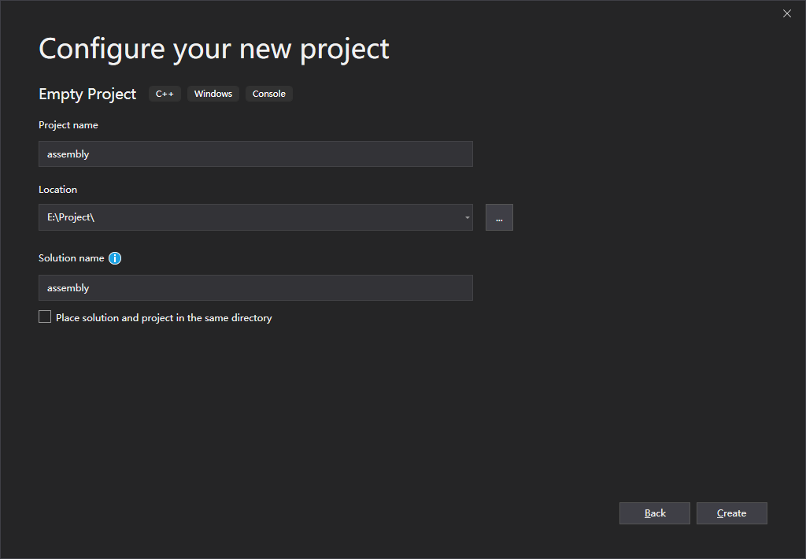
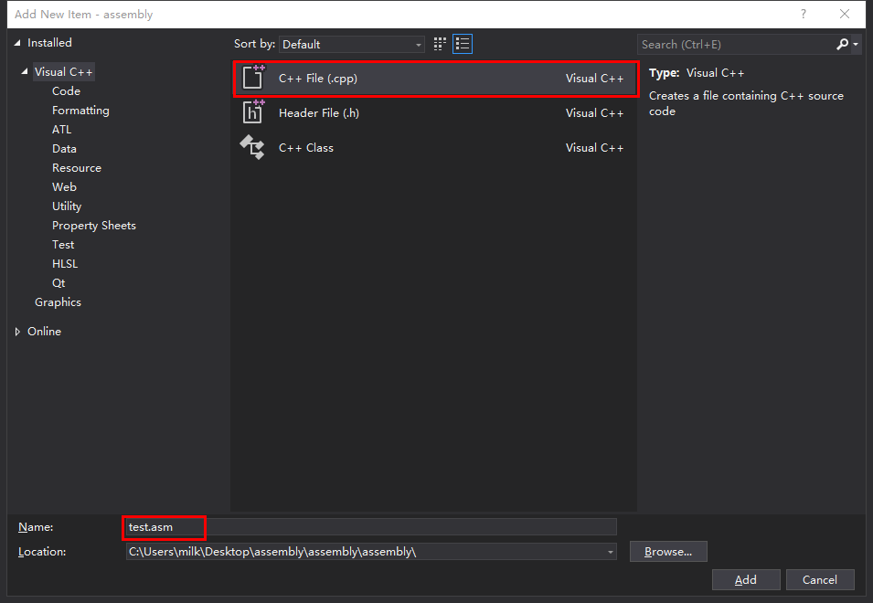
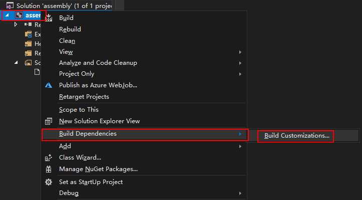
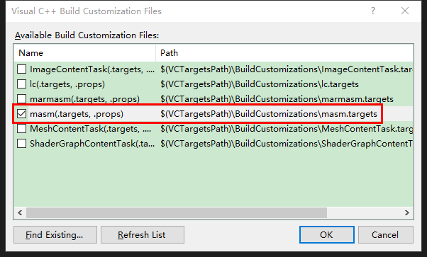
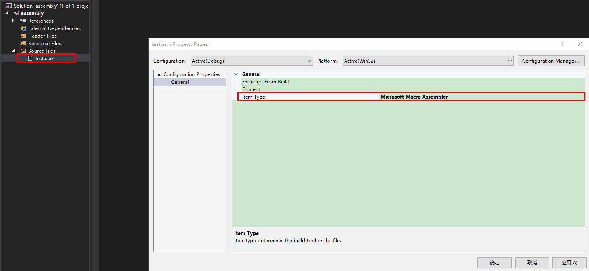
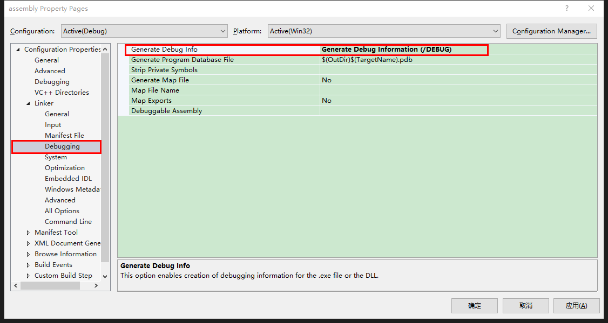
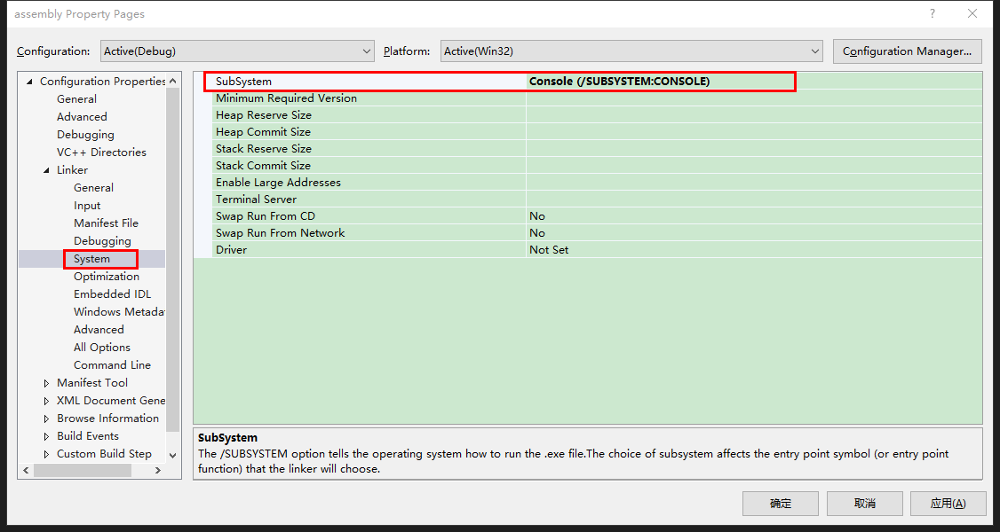
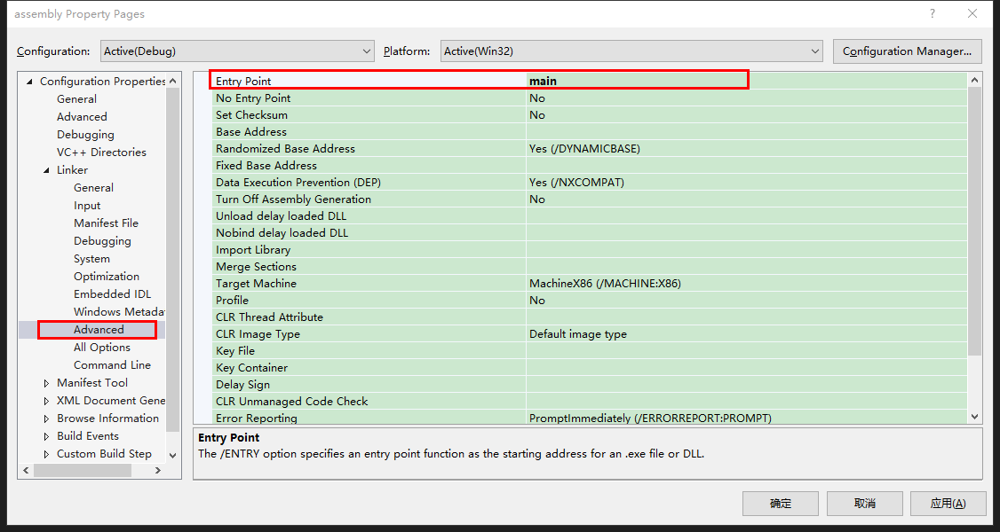
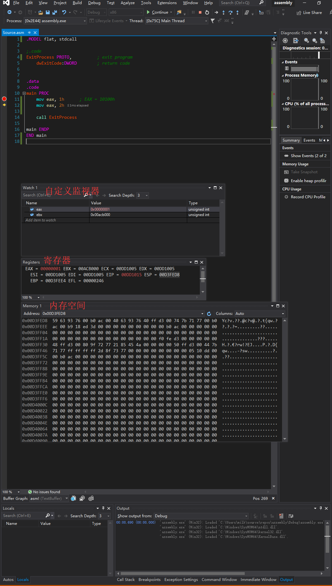
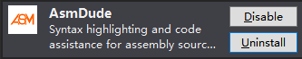

Visual Studio 汇编环境搭建
写在前面
32 位汇编语言开发环境
开始
创建项目
不必多说，Visual Studio 各个版本之间略有差异

我的项目名称为assembly
添加.asm 文件
添加新项目 -> C++File(.cpp)修改为.asm文件

我添加的为test.asm
修改后缀为.asm 即可
生成依赖项
右击Solution Explorer中的解决方案assembly(项目名) -> Build Dependencies -> Build Customizations...

勾选masm选项

文件种类修改
右击你创建的添加的文件，我的为test.asm，修改General下的Item Type为Mircrosoft Macro Assembler

Project -> Properities…设置
项目属性设置，点击 IDE 窗口上的Project -> Properities...打开
Linker->Debugging->Generate Debug Info修改为Generate Debug Information(/DEBUG)

Linker->System->Subsystem修改为Console(/SUBSYSTEM:CONSOLE)

Linker->Advanced->Entry Point修改为main

调试相关
调试程序
.MODEL flat, stdcall
ExitProcess PROTO, ; exit program
dwExitCode:DWORD ; return code
.data
.code
main PROC
mov eax, 1h
mov eax, 2h
call ExitProcess
main ENDP
END main
打上断点，点击调试
窗口的选择：
打开 Registers(寄存器):
Debug->Windows->Registers- 快捷键:
Ctrl+Alt+G
打开 Memory(内存):
Debug->Windows->Memory- 快捷键:
Ctrl+Alt+M,1
先按下 Ctrl + Alt + M, 再选择一个内存 1~4
代码高亮

写在后面
强大的 Visual Studio，可惜没有 Linux 发行版的。
站在巨人的肩膀上。
comment:
- ChangYan
- LiveRe
- Valine